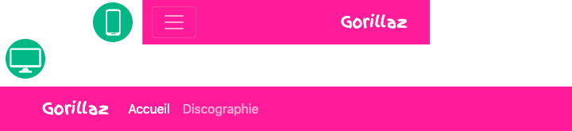
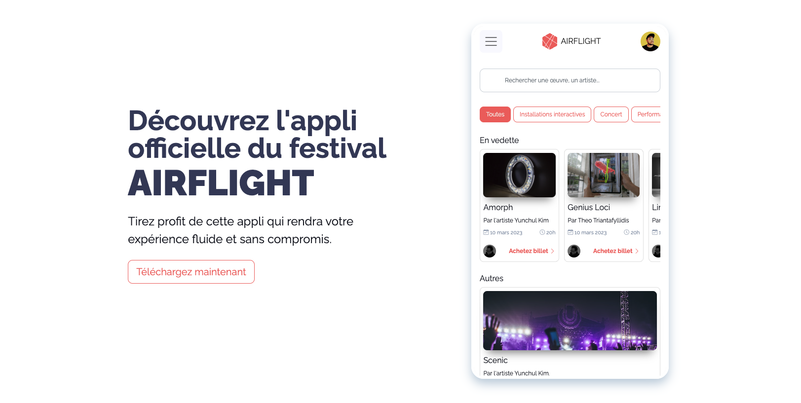
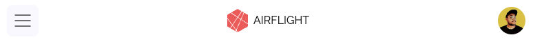
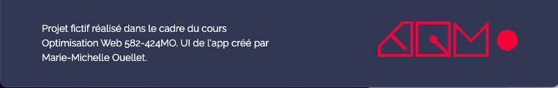
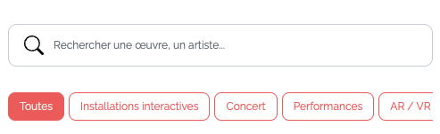

Requis en équipe
Création du repo GitHub
Vous devez créer un répertoire GitHub intitulé [prenom1]-[prenom2]-airflight.
Par exemple, si Bob et moi sommes coéquipiers, notre répertoire GitHub s'intitulera: bob-mariemichelle-airflight
Attention, celui-ci devra être en mode public et non privé 🚫. N'oubliez pas de cocher pour créer fichier README.
La personne ayant créé le répertoire avec son propre compte GitHub doit inviter son coéquipier afin que celui-ci puisse y avoir accès.
Vous decez ensuite cloner localement le répertoire du projet et y déposer les fichiers que vous avez créés dans le devoir P1.2.1.
Éditez le fichier README, utilisez le MARKDOWN.
-Affichez le nom de votre choix de festival en tant de titre principal du markdown (heading niveau 1)
-Ajoutez ensuite le nom de ce cours suivi du nom du projet, ex: Optimisation Web - Air Flight
- Ajoutez un sous-titre nommé "Équipe", ainsi qu'une liste liste à puce avec chacun des membres de l'équipe.
Faites un push vers GitHub.
Le 2e coéquipier, devra à son tour faire un clone sur son ordi.
Vous êtes maintenant prêts à faire un pull à nouveau, chacun de votre côté et vous assurer que vous partez tous du même pied.
Requis individuel pour la landing page
Base de la page et navBar
Aperçu du résultat pour la navBar👇

Dans ta page HTML, ajoute dans le head, une balise meta robots dans laquelle tu vas spécifier que les moteurs de recherche existants (Bing ,Google etc) ne doivent pas indexer, ni suivre ta page Web (afin d'éviter que ton faux site d'app de festival se retouve sur Google et confonde les gens), plus d'info sur cette balise ici ou alors tu peux Googler sur le sujet pour mieux comprendre à quoi ça sert.
Toujours dans ta page HTML, tu dois créer un header, main et footer.
Dans header, tu dois ajouter une navBar Bootstrap. Celle-ci doit avoir un thème de couleur et une couleur de fond.
La navbar doit prendre une largeur complète de l'écran de sorte que son fond de couleur doit créer une ligne qui remplit la largeur de la fenêtre du navigateur. Cependant le contenu à l'intérieur de la navbar doit-être dans un conteneur Bootstrap de base, changeant de largeur maximale en fonction du breakpoint.
À partir du breakpoint lg, la navbar doit affichée une barre de navigation complète.
À ta navbar, ajoute ton logo. Ce logo doit-être cliquable pour ramener au haut de la page.
À ta navbar, ajoute une liste d'ancres (liens): L'appli, Fonctionnalités, En voir plus. La première ancre, mène vers la section hero, la deuxième vers la future section fonctionnalités et la troisième vers une section "voir plus". Vous pouvez alors déjà déterminer le nom des sections et préparer vos href vers les futures sections de la page.
La navbar doit être toujours figée en haut de la page, peut-importe le défilement.
Le lien .active de la navBar devra se mettre à jour automatiquement en fonction de la section vis-à-vis laquelle on défile (scroll). Pour se faire, vous devrez utiliser la composante "Scrollspy" de Bootstrap. On ne l'a pas vu ensemble, mais je veux que vous appreniez à vous documenter vous-même, ainsi, je vous invite à aller voir comment utiliser cette composante ici.
Notes de cours 📚
NavBar
La barre de navigation Bootstrap
Pied de page
Aperçu du résultat pour le pied de page👇
 Le pied de page doit se démarquer du contenu principal du site en ayant une couleur de fond le différenciant, une marge intérieure d'au moins 1rem afin que son contenu ne touche pas ses extrémités et finalement une marge extérieure verticale de 1rem vers le haut ⬆️ afin que celui-ci ne touche pas au contenu le précédent dans la page. Tu dois utiliser la classes utilitaires Bootstrap pour créer des espacements.
Un conteneur Bootstrap doit être utilisé afin de gérer le positionnement des éléments à l'intérieur de celui-ci.
Le texte doit être centré par défaut dans le pied de page.
Faites en sorte que par défaut les informations suivantes apparaissent une en dessous de l'autre dans l'ordre suivant:
Le pied de page doit se démarquer du contenu principal du site en ayant une couleur de fond le différenciant, une marge intérieure d'au moins 1rem afin que son contenu ne touche pas ses extrémités et finalement une marge extérieure verticale de 1rem vers le haut ⬆️ afin que celui-ci ne touche pas au contenu le précédent dans la page. Tu dois utiliser la classes utilitaires Bootstrap pour créer des espacements.
Un conteneur Bootstrap doit être utilisé afin de gérer le positionnement des éléments à l'intérieur de celui-ci.
Le texte doit être centré par défaut dans le pied de page.
Faites en sorte que par défaut les informations suivantes apparaissent une en dessous de l'autre dans l'ordre suivant:
-Noms des artisans du site.
-Un lien vers répertoire GitHub du projet.
-La mention "©2023".
Bien que l'url du répertoire GitHub soit un lien, ce texte ne doit pas avoir de ligne en dessous, ne pas être bleu mais il doit changer d'apparence au survol. Petit "challenge", ton sélecteur css pointant vers ce lien ne doit pas être une classe. Tu ne peux qu'utiliser les sélecteurs css avec le nom de la balise MAIS, le style ne doit s'appliquer que cette balise là et non à tous les liens de la page.
À partir du breakpoint lg, le nom des artisans doit être aligné à gauche et apparaitre à gauche du pied de page, tandis que le lien vers le répertoire GitHub et la mention "©2023" doivent être alignés à droite et apparaitre à droite du pied de page.
Notes de cours 📚
Grille
Système de grille Bootstrap pour un mise en page facile et réactive
Section Hero
Aperçu du résultat pour la section Héro

Évidemment, votre héro ne sera pas exactement pareil à l'apercu, car vous avez fait votre propre design, mais il doit quand même suivre ces quelques instructions.
Votre héros doit être divisé en 2 colonnes. Par défaut, ces 2 colonnes se placent l'une en dessous de l'autre.
Le contenu de ces 2 colonnes est par défaut centré.
À partir du breakpoint de votre choix entre md, lg ou xl, ces 2 colonnes se déploient l'une à côté de l'autre et leur contenu n'est plus centré, il sera aligné à gauche.
Ces 2 colonnes ensemble ne s'étalent pas nécessairement sur tous les 12 séparateurs de la grille Bootstrap.
La première colonne contient un texte qui présente l'appli du festival. Vous pouvez réutiliser le même texte comme ci-haut ou rédiger votre propre texte. Il doit contenir le titre principal de la page ainsi qu'un sous-texte. Utilisez les balises appropriées. Il y aura aussi un bouton d'appel à l'action, utilisez la composante Bootstrap. Stylisez le tout au besoin.
La 2e colonne contiendra un div qui représente le "cadre du téléphone mobile". Ce div aura une largeur de 100% dans sa propre colonne et un ratio de 5/9 pour que la hauteur s'automatise. Vous pouvez, au besoin, ajouter une largeur maximale. Ajoutez vos styles au besoin pour s'approcher le plus de votre design.
Ajoutez dans le div qui fait office de cadre de téléphone, un iframe dont la source sera la page HTML qui correspond à l'appli de votre collègue.
Notes de cours 📚
Grille
Système de grille Bootstrap pour un mise en page facile et réactive
Requis individuel pour l'appli
Aperçu du résultat pour la navBar👇

Dans ta page HTML, ajoute dans le head, une balise meta robots dans laquelle tu vas spécifier que les moteurs de recherche existants (Bing ,Google etc) ne doivent pas indexer, ni suivre ta page Web (afin d'éviter que ton faux site d'app de festival se retrouve sur Google et confonde les gens), plus d'info sur cette balise ici ou alors tu peux Googler sur le sujet pour mieux comprendre à quoi ça sert.
Toujours dans ta page HTML, tu dois créer un header, main et footer.
Dans header, tu dois ajouter une navBar Bootstrap. Celle-ci doit avoir un thème de couleur et une couleur de fond.
La navbar doit prendre une largeur complète de l'écran de sorte que son fond de couleur doit créer une ligne qui remplit la largeur de la fenêtre du navigateur. Cependant le contenu à l'intérieur de la navbar doit-être dans un conteneur Bootstrap qui permet de s'étaler sur la largeur de la page (bref pas de largeur maximum).
Comme nous sommes dans une app navbar ne doit jamais afficher une barre de navigation complète, elle sera toujours cachée dernière un menu Hamburger ☰.
À ta navbar, ajoute ton logo. Ce logo doit-être cliquable pour ramener au haut de la page. Ce logo doit contenir à la fois une image (svg ou png) ainsi que le nom du festival en texte. Ce logo doit être centré dans la navBar.
À ta navbar, ajoute une liste de liens: Accueil, Programmation, Oeuvres, Présentation des artistes, Amis sur carte interactive. Pour le moment ces liens peuvent pointer vers un #.
À ta navBar, ajoute une photo de profil de la personne qui est connectée à l'appli. Cette photo peut-être stylisée comme vous le voulez (ronde, carré etc), elle doit se placer à droite de la navBar.
La navbar doit être toujours figée en haut de la page, peut-importe le défilement.
Notes de cours 📚
NavBar
La barre de navigation Bootstrap
Pied de page
Aperçu du résultat pour le pied de page👇
Défaut

À partir de
SM

Le pied de page doit se démarquer du contenu principal du site en ayant une couleur de fond le différenciant, une marge intérieure d'au moins 1rem afin que son contenu ne touche pas ses extrémités et finalement une marge extérieure verticale de 1rem vers le haut ⬆️ afin que celui-ci ne touche pas au contenu le précédent dans la page. Tu dois utiliser la classes utilitaires Bootstrap pour créer des espacements.
Un conteneur Bootstrap doit être utilisé afin de gérer le positionnement des éléments à l'intérieur de celui-ci, ce conteneur doit être celui qui n'a pas de largeur maximum.
À partir du breakpoint sm, affichez le texte à gauche du logo.
À partir du breakpoint sm, le texte de gauche doit s'aligner à gauche, et le logo doit maintenant s'aligner à droite.
Vous pouvez utiliser ce url pour le logo: https://tim-montmorency.com/timdoc/shared/images/logo-tim.svg
Au besoin, ajoutez des classes d'espacement Bootstrap pour aligner les éléments un peu comme l'aperçu ci-haut.
Formulaire de recherche et liste de filtres
Aperçu du résultat pour le pied de page👇

Dans main, sous la navbar, crée-toi un conteneur bootstrap.
Dans ce conteneur, crée-toi 2 sections avec la balise sémantique la plus appropriée, les deux sections seront des rangées Bootstrap.
Va voir la documentation sur les icônes Bootstrap et installe le paquet d'icône via CDN, soit avec la balise link ou via @import dans le css, à ta guise.
Dans la première section, crée-toi un formulaire qui contiendra un champ de recherche. Va voir la documentation Boostrap sur les formulaires afin d'utiliser les classes appropriées.
Dans le champ recheche, le placeholder sera "Rechercher une oeuvre, un artiste..."
Stylise ton champ comme tu veux, par contre je veux que tu ajoutes l'icône de la loupe au début du champ de recherche. Utilise le format "Icon font" pour ajouter l'icône Boostrap avec la loupe.
Dans la 2e section, crée-toi un div qui aura un overflow caché. Dans ce div, crée-toi une liste ul li de boutons (utilise les boutons de Bootstrap).
Stylise cette liste afin qu'elle n'ait pas de puce et que les boutons s'affichent tous sur une même ligne.
Re-stylise des boutons, au besoin, dans ton fichier CSS.
Le format "icon font" est le suivant: <i class="bi-alarm"></i>.
Voir la documentation sur les icônes Bootstrap pour en savoir plus.
Remise de P1.2
Une fois tout complété, créez vous une branche git nommée P1-2 et publiez cette branche sur github.
Après la remise, vous ne touchez plus à cette branche. Vous devrez continuer sur la branche main et la branche P1-2 demeurera telle qu'elle afin que je puisse y faire ma correction. Les propchaines remises seront toujours sur des branches distinctes.